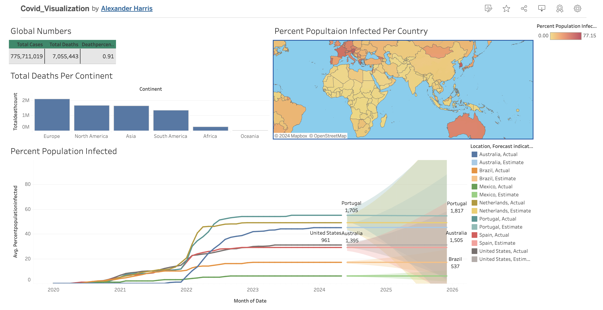

Covid Data Visualizations

This Dashboard offers a comprehensive view of the global pandemic impact. It begins with a list of global numbers, highlighting key statistics such as total cases, recoveries, and deaths worldwide. A heat map visually represents the percentage of the population infected in each country, with darker shades indicating higher infection rates. A bar graph follows, illustrating total deaths per continent, where Europe shows the highest fatalities and Oceania the lowest. Lastly, a line graph tracks the percentage of the global population infected over time, providing insight into how the pandemic has evolved. This was my first data analysis project, guided by a YouTube video from AlexTheAnalyst. Feel free to click on the Github repository link to see more.
Github Repository